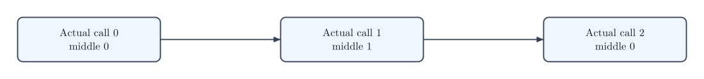
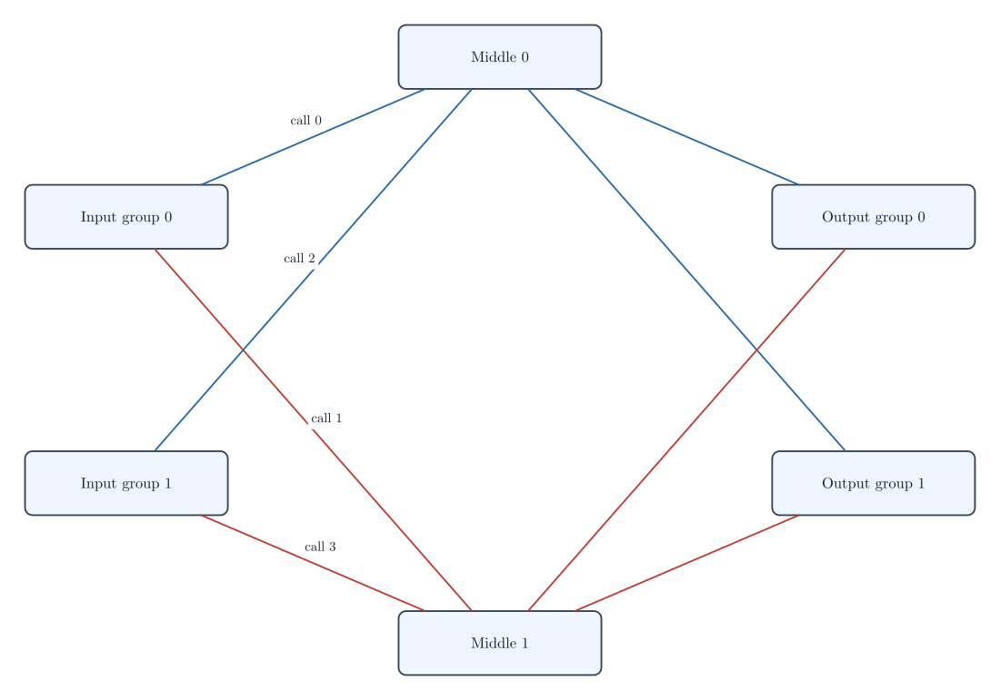
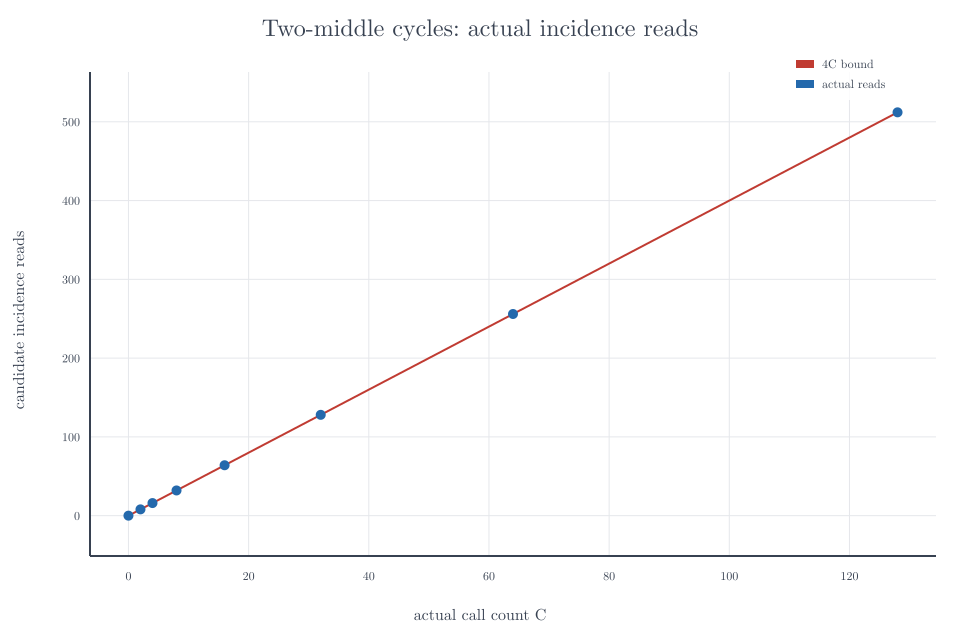
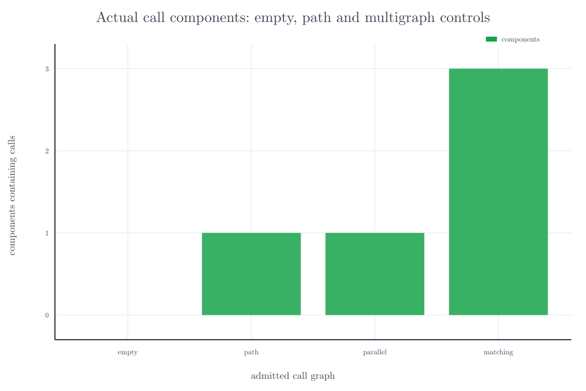

Rearranging calls through two middle switches
Abstract
Route a restricted call set through two middle switches without reusing an input-to-middle or middle-to-output link. Calls form a bipartite multigraph whose endpoint degrees are at most two. Actual native BFS assignments explain a small path and retain the original four-cycle, while an independent feasibility check certifies the resulting link choices.
The restricted routing model
An input group and an output group identify each call. Its middle-switch choice is0 or1. Calls sharing an input must choose different middles, and calls sharing an output must choose different middles. Thus the choices are a two-edge-coloring of the bipartite call graph. Parallel calls between the same groups are allowed and require opposite colors.
A finite graph of maximum degree two has components that are isolated vertices, paths or cycles. Only vertices incident to calls matter here. Bipartite cycles have even length, so alternating two colors works on each path and cycle. Starting a new component at color zero and propagating opposite colors through shared endpoints therefore produces a feasible assignment. Component-wise color flips are equally valid; the particular numeric choices are implementation identities.
This argument concerns the supplied degree-at-most-two model. It is not a theorem that an arbitrary Clos network with two middle switches is strictly nonblocking. Rearrangement may change existing calls’ middle choices; admitting new calls online without moving existing paths is a different requirement.
A three-call path, one actual assignment at a time
The small path calls(0,0),(1,0),(1,1) must alternate0,1,0. Native records identify the actual discovering call and whether it shared an input or output. The next diagram follows the actual first-assignment order, and the complete route vector retains original call order. The feasibility checker verifies link constraints without insisting on the producer’s specific color orientation.
#include <dm/dm.hpp>
int main() {
std::filesystem::create_directories("build");
std::vector<std::pair<std::size_t, std::size_t>> calls{{0, 0}, {1, 0},
{1, 1}};
auto t = dm::algorithms::nonblocking_switch_trace(2, 2, calls);
dm::graphics::Diagram d;
std::print("| actual assigned call | actual middle | actual component | discovery |\n| ---: | ---: | " "---: | --- |\n");
for (std::size_t i = 0; i < t.assignments.size(); ++i) {
auto &a = t.assignments[i];
auto route =
a.component_start ? std::string("component start")
: std::format("call {} via {}", a.parent,
a.via_input ? "input" : "output");
std::print("| {} | {} | {} | {} |\n", a.call, a.middle, a.component,
route);
d.node(std::to_string(i), {7. * i, 0},
std::format("Actual call {}\nmiddle {}", a.call, a.middle));
if (i)
d.edge(std::to_string(i - 1), std::to_string(i));
}
std::print("\nActual original-order routes {}; feasible certificate {}.\n",
t.analysis.routes,
dm::algorithms::nonblocking_switch_feasible(2, 2, calls,
t.analysis.routes));
d.save_svg("build/switch_tiny.svg");
}| actual assigned call | actual middle | actual component | discovery |
|---|---|---|---|
| 0 | 0 | 0 | component start |
| 1 | 1 | 0 | call 0 via output |
| 2 | 0 | 0 | call 1 via input |
Actual original-order routes [0, 1, 0]; feasible certificate true.

Retain the original four-cycle
The original calls are(0,0),(0,1),(1,1),(1,0). Native routing returns0,1,0,1 in this original call order. BFS discovery order differs: it reaches calls through incident lists, rather than simply processing each listed call once in sequence. The table records that actual order. In the diagram, each colored two-link route passes through its actual middle node. Wire crossings in this drawing are not shared network links.
#include <dm/dm.hpp>
int main() {
std::filesystem::create_directories("build");
auto calls = dm::algorithms::nonblocking_switch_demo_calls();
auto t = dm::algorithms::nonblocking_switch_trace(2, 2, calls);
dm::graphics::Diagram d;
for (int i = 0; i < 2; ++i) {
d.node("i" + std::to_string(i), {0., -5. * i},
std::format("Input group {}", i));
d.node("o" + std::to_string(i), {14., -5. * i},
std::format("Output group {}", i));
d.node("m" + std::to_string(i), {7., 3. - 11. * i},
std::format("Middle {}", i));
}
std::vector<dm::graphics::RGB> colors{{36, 105, 172}, {192, 59, 50}};
for (std::size_t e = 0; e < calls.size(); ++e) {
auto[u, v] = calls[e];
auto middle = t.analysis.routes[e];
dm::graphics::DiagramStroke stroke;
stroke.color = colors[middle];
d.link("i" + std::to_string(u), "m" + std::to_string(middle),
std::format("call {}", e), stroke);
d.link("m" + std::to_string(middle), "o" + std::to_string(v), "", stroke);
}
std::print("| actual discovery position | original call ID | actual middle |\n| ---: | ---: | ---: |\n");
for (std::size_t i = 0; i < t.assignments.size(); ++i)
std::print("| {} | {} | {} |\n", i, t.assignments[i].call,
t.assignments[i].middle);
std::print("\nOriginal-order routes {}; native feasible certificate {}.\n",
t.analysis.routes,
dm::algorithms::nonblocking_switch_feasible(2, 2, calls,
t.analysis.routes));
d.save_svg("build/switch_original.svg");
}| actual discovery position | original call ID | actual middle |
|---|---|---|
| 0 | 0 | 0 |
| 1 | 1 | 1 |
| 2 | 3 | 1 |
| 3 | 2 | 0 |
Original-order routes [0, 1, 0, 1]; native feasible certificate true.

Actual incidence reads and the linear bound
Each call is dequeued exactly once. At its two endpoints the producer scans both incidence lists, including the call itself. Its actual candidate reads are degree(input)+degree(output), at most four because both degrees are at most two. Summing gives at most4C reads. Equality holds for the cycle family, including two parallel calls when there is only one input/output group. The next native fixture retains the original ordering when groups=2 and extends it to larger cycles.
The complete O(I+O+C) work and storage bound also includes allocating/validating all input and output group lists, which these selected traversal counters do not measure. The graph proof ensures propagation does not encounter a conflicting parity under the admitted domain. It does not remove the cost of complete input checks.
#include <dm/dm.hpp>
int main() {
std::filesystem::create_directories("build");
std::vector<double> calls, reads, bound;
std::print("| input/output groups each | actual calls | actual queue pops | actual incidence reads | " "feasible |\n| ---: | ---: | ---: | ---: | --- |\n");
for (std::size_t n : {0, 1, 2, 4, 8, 16, 32, 64}) {
auto c = dm::algorithms::nonblocking_switch_cycle_calls(n);
auto r = dm::algorithms::nonblocking_switch_analyze(n, n, c);
calls.push_back(c.size());
reads.push_back(r.incidence_reads);
bound.push_back(4 * c.size());
std::print("| {} | {} | {} | {} | {} |\n", n, c.size(), r.queue_pops,
r.incidence_reads,
dm::algorithms::nonblocking_switch_feasible(n, n, c, r.routes));
}
auto p = dm::graphics::RPlot::create();
p.lines(calls, bound, "4C bound", {192, 59, 50}).points(calls, reads,
"actual reads",
{36, 105, 172}, 5).title("Two-middle cycles: actual incidence reads").x_label("actual call count C").y_label("candidate incidence reads").save_svg("build/switch_work.svg");
}| input/output groups each | actual calls | actual queue pops | actual incidence reads | feasible |
|---|---|---|---|---|
| 0 | 0 | 0 | 0 | true |
| 1 | 2 | 2 | 8 | true |
| 2 | 4 | 4 | 16 | true |
| 4 | 8 | 8 | 32 | true |
| 8 | 16 | 16 | 64 | true |
| 16 | 32 | 32 | 128 | true |
| 32 | 64 | 64 | 256 | true |
| 64 | 128 | 128 | 512 | true |

Disconnected, parallel and empty controls
Disconnected components start independently at zero; an isolated call has no color constraint from another call. The parallel-call control is a valid two-edge cycle in a multigraph, and it uses both middles. Empty calls with zero groups return an empty feasible routing. The table and chart compare actual component counts rather than treating them as graph dimensions or physical switch counts.
#include <dm/dm.hpp>
int main() {
std::filesystem::create_directories("build");
using Calls = std::vector<std::pair<std::size_t, std::size_t>>;
struct Case {
std::string name;
std::size_t groups;
Calls calls;
};
std::vector<Case> cases{{"empty", 0, {}},
{"path", 2, {{0, 0}, {1, 0}, {1, 1}}},
{"parallel", 1, {{0, 0}, {0, 0}}},
{"matching", 3, {{0, 0}, {1, 1}, {2, 2}}}};
std::vector<std::string> labels;
std::vector<double> components;
std::print("| control | actual routes | actual components | actual candidate reads | feasible |\n| --- " "| --- | ---: | ---: | --- |\n");
for (auto &c : cases) {
auto r =
dm::algorithms::nonblocking_switch_analyze(c.groups, c.groups,
c.calls);
labels.push_back(c.name);
components.push_back(r.components);
std::print("| {} | {} | {} | {} | {} |\n", c.name, r.routes,
r.components, r.incidence_reads,
dm::algorithms::nonblocking_switch_feasible(c.groups,
c.groups,
c.calls, r.routes));
}
auto p = dm::graphics::RPlot::barplot(components, labels, "components");
p.title("Actual call components: empty, path and multigraph controls").x_label("admitted call graph").y_label("components containing calls").save_svg("build/switch_controls.svg");
}| control | actual routes | actual components | actual candidate reads | feasible |
|---|---|---|---|---|
| empty | [] | 0 | 0 | true |
| path | [0, 1, 0] | 1 | 10 | true |
| parallel | [0, 1] | 1 | 8 | true |
| matching | [0, 0, 0] | 3 | 6 | true |

Complete contracts and capture policies
Every endpoint is checked against the original group counts before resource policies. Complete group-count/container geometry is checked before dense incidence allocation. Analyzed and traced calls default to1000000 total groups and1000000 calls; ordinary routing disables those optional caps. Degrees are checked before any color assignment. A degree above two or an out-of-range endpoint throws rather than returning an incomplete routing.
After incidence validation, the exact complete logical trace size is known:2 group-count scalars,2C endpoint IDs,C output colors,C actual assignment records and every actual incidence candidate record, totaling2+4C+reads. Its separate default1000000-unit quota is checked before copying history or coloring; zero disables each policy. Returned histories own their inputs and actual decisions. These units count logical records rather than bytes or peak process memory.
The alternating-path/even-cycle proof above establishes feasibility for this restricted model directly. The original four-cycle result is retained, while the report distinguishes actual traversal order, selectable color orientation and a verified route certificate from broader claims about arbitrary nonblocking network designs.
Verification
This ten-report batch passes75 CTest cases,22 directly instrumented ASan/UBSan
cases,122 compiled and executed public examples,538/538 scoped documentation
definitions and ten representative clangd hovers. Independent Python
arbitrary-precision arithmetic verifies69365 captured division records
with656460 checks; native independent polynomial, geometry, finite-range, graph,
ranking and callback checks cover the remaining producers. Frozen valid-input
comparisons preserve Neville recurrences, Newton result/callback paths, complete
byte encodings, switch routes and NSGA-II complete objective-call
sequences/final fronts. Ten checkout headers and ten byte-identical installed
development headers compile independently; an installed-header native consumer
links and runs. All40 complete programs execute, and40 native figures have been
visually reviewed; HTML/Markdown exports preserve computed rows/prose and
identical image bytes. Checks are scoped native checks, not an installation
claim for every language binding. Receipts:
build/mepml-conversion/batch-254-263/.